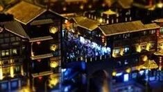

【行者无疆·源洄渝州】文化科普汇总-巴渝文化（一）
行者无疆 文化科普汇总

巴江江水色，一带浓蓝碧，重庆之美岂在纸页之间？何不荡起文字的双桨，与我们一起轻轻划破重庆的云遮雾绕，品味潜藏在一砖一瓦下尘封的悠悠古韵，找寻那些或被遗忘或行将消逝的历史，在心里一点一滴蕴积有情。

重庆小面
重庆小面是重庆四大特色之一，归属于重庆面食的一类，其中佐料是重庆面的灵魂，一碗面条全凭调料提味儿。麻辣味调和不刺激，面条劲道顺滑，汤料香气扑鼻，味道浓厚。
顾客可以要求店家制作个人定制口味，如"干熘"(拌面)、"提黄"(偏生硬)、"加青"(多加蔬菜)、"重辣"(多加油辣子)等等。
大足石刻
大足石刻是102处摩崖造像的总称，其位于重庆市大足区境内，其中75处被列为各级文物保护单位。而现存的大足石刻作品中，开凿于唐永徽元年，盛于宋代。
其中比较重要的有北山、宝顶山、南山、石门、石篆山石刻，他们是大足石刻中规模最大艺术价值最高的石刻造像代表。
万州烤鱼
万州烤鱼起源汉朝的川渝地区，距今已有2000年历史。菜品因其特殊的料理和制作工艺红遍大江南北，风味独特，工艺讲究。
厨师多采用先烤后炖相结合的两种烹饪方法，最大限度地保留了菜品的营养和口感，同时有效防止了因低、高温对营养带来的损失，深得食客的喜爱。
酸辣粉
酸辣粉属于川菜、渝菜小吃，其特点是麻、辣、鲜、香、酸且油而不腻，大多由红薯，红苕，豌豆按比例调和，然后由农家用传统手工漏制而成。
酸辣粉源于西南民间，取食材至当地手工制作的红薯粉，味以突出酸辣为主而得名。
洪崖洞
军事要塞
千与千寻


洪崖洞原名洪崖门，历来为军事要塞，地处重庆解放碑中央商务区之嘉陵江上，原是古重庆十七道城门之一。
洪崖洞与世界第一拱门的朝天门大桥隔岸相望，被誉为激情重庆的“城市名片”和“重庆人的宴客厅”，也被人称作是现实版的《千与千寻》中的汤婆婆的油屋。
铜梁龙舞
铜梁龙舞是流传于重庆市铜梁县境内的一种以龙为主要道具的传统民俗舞蹈艺术形式，被国务院列入首批国家级非物质文化遗产代表作名录，是重庆十大文化符号之一。
铜梁龙舞具有与民俗活动紧密相联、舞时烟花烧龙、伴奏音乐独特、道具构思巧妙、服饰俭朴大方、群众参与性极强等特点。
重庆大剧院
重庆大剧院位于重庆市江北区北城文华街东路，是集歌剧、戏剧、音乐会演出，文化艺术交流，多功能为一体的大型社会文化设施。
大剧院的设计以“孤帆远影”为主题，其建筑表面选用浅绿色的有机玻璃，整个大剧院外形酷似“玻璃时空船”，寓意从过去驶向未来。
秀山民歌
秀山民歌起源巴渝歌舞，声振林木，余音满屋。来自上古，曾在元明清喑哑无声，重在新中国惊起梁尘。
咿呀唱响，无论是传播知识亦或是诉说衷肠，都是秀山人民最好的音腔。“挑一挑白米下柳州喂，桃花溜呀么哥呀哈里呀”，朴实的土味情话又唱进过多少秀山人民的心窝。
歌舞
川江号子
川江号子是川渝地区川江流域船工们为统一动作和节奏，由号工领唱，众船工帮腔、合唱的一种一领众和式的传统民间歌唱形式。
它主要流传于金沙江、长江及其支流岷江、沱江、嘉陵江、乌江和大宁河等流域。这一带航道曲折，山势险峻，水急滩多，在这种特殊的地理环境下川江号子应运而生。


「期待•即将前往•重庆的•我们」
重庆是山城也是雾都，有“火炉”之称亦有“桥都”雅号。她是戴着薄纱的姑娘，是那些因城市独有的地理位置和文化环境而产生的千百美食万种美景，更是记忆，是生活，也是向往，是独属重庆的岁月残片，是永恒的历史勋章。
来源丨行者无疆实践团
文字丨王耿
排版丨康艳虎
审核丨邓子孚 段智然
行者无疆实践团
QQ：2758025831

随行者一起认识世界
长按二维码关注